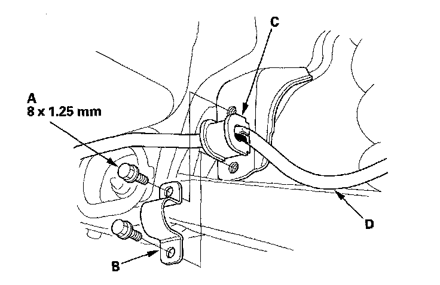
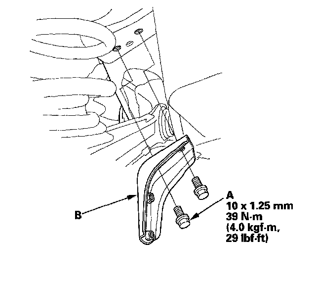
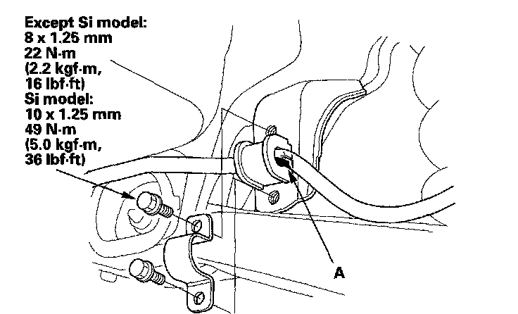

Rear Suspension
Stabilizer Bar Replacement1. Raise the rear of the vehicle, and support it with safety stands in the proper locations.
2. Remove the rear wheels.
3. Disconnect both stabilizer links from the stabilizer bar.
4. Remove the flange bolts (A) and the bushing holders (B), then remove the bushings (C) and the stabilizer bar (D).

5. Remove the flange bolts (A) and the stabilizer bar bracket (B) if necessary.

6. Install the stabilizer bar in the reverse order of removal, and note these items:
^ Note the right and left direction of the stabilizer bar.
^ Align the paint marks (A) on the stabilizer bar with the sides of the bushings.
^ Refer to stabilizer link removal/installation to connect the stabilizer bar to the links.
^ Before installing the wheel, clean the mating surfaces on the brake disc or the brake drum and inside of the wheel.
^ Check the wheel alignment, and adjust it if necessary.
